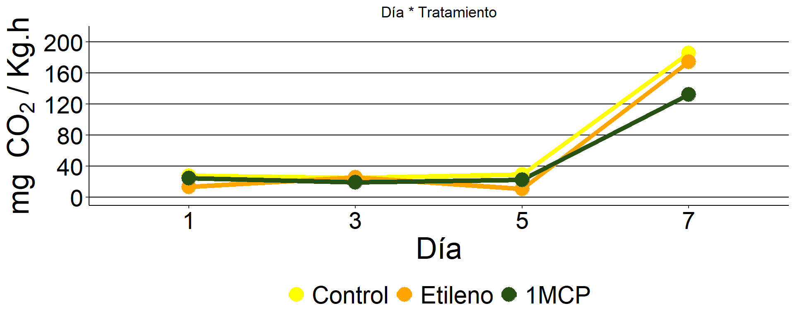

Ensayo 6
Encabezado de la base de datos
## # A tibble: 36 × 5
## Día Tratamiento Respiración dia respiracion
## <dbl> <fct> <dbl> <fct> <dbl>
## 1 1 Control 33.9 1 33.9
## 2 1 Control 28.4 1 28.4
## 3 1 Control 21.9 1 21.9
## 4 1 Etileno 6.91 1 6.91
## 5 1 Etileno 12.7 1 12.7
## 6 1 Etileno 20.7 1 20.7
## 7 1 1MCP 25.6 1 25.6
## 8 1 1MCP 23.4 1 23.4
## 9 1 1MCP 25.0 1 25.0
## 10 3 Control 28.0 3 28.0
## # ℹ 26 more rowsGráfico de perfiles 
Resumen del modelo
## Generalized least squares fit by maximum likelihood
## Model: log(respiracion) ~ Tratamiento * dia
## Data: ensayo6
## AIC BIC logLik
## 5.70212653 31.0384296 13.1489367
##
## Variance function:
## Structure: Different standard deviations per stratum
## Formula: ~1 | dia
## Parameter estimates:
## 1 3 5 7
## 1.000000000 0.691599016 0.424911488 0.440453778
##
## Coefficients:
## Value Std.Error t-value p-value
## (Intercept) 3.31806864 0.197974491 16.76008166 0.0000
## TratamientoEtileno -0.81681156 0.279978211 -2.91741116 0.0075
## Tratamiento1MCP -0.11307183 0.279978211 -0.40385938 0.6899
## dia3 -0.10209972 0.240708749 -0.42416291 0.6752
## dia5 0.05488914 0.215105437 0.25517320 0.8008
## dia7 1.90463024 0.216327292 8.80439182 0.0000
## TratamientoEtileno:dia3 0.83598699 0.340413577 2.45579803 0.0217
## Tratamiento1MCP:dia3 -0.16616689 0.340413577 -0.48813239 0.6299
## TratamientoEtileno:dia5 -0.19873718 0.304205026 -0.65330013 0.5198
## Tratamiento1MCP:dia5 -0.14823739 0.304205026 -0.48729437 0.6305
## TratamientoEtileno:dia7 0.74244280 0.305932990 2.42681511 0.0231
## Tratamiento1MCP:dia7 -0.23416701 0.305932990 -0.76541929 0.4515
##
## Correlation:
## (Intr) TrtmnE Tr1MCP dia3 dia5 dia7 TrtE:3 T1MCP:3 TrtE:5 T1MCP:5 TrtE:7
## TratamientoEtileno -0.707
## Tratamiento1MCP -0.707 0.500
## dia3 -0.822 0.582 0.582
## dia5 -0.920 0.651 0.651 0.757
## dia7 -0.915 0.647 0.647 0.753 0.842
## TratamientoEtileno:dia3 0.582 -0.822 -0.411 -0.707 -0.535 -0.532
## Tratamiento1MCP:dia3 0.582 -0.411 -0.822 -0.707 -0.535 -0.532 0.500
## TratamientoEtileno:dia5 0.651 -0.920 -0.460 -0.535 -0.707 -0.596 0.757 0.378
## Tratamiento1MCP:dia5 0.651 -0.460 -0.920 -0.535 -0.707 -0.596 0.378 0.757 0.500
## TratamientoEtileno:dia7 0.647 -0.915 -0.458 -0.532 -0.596 -0.707 0.753 0.376 0.842 0.421
## Tratamiento1MCP:dia7 0.647 -0.458 -0.915 -0.532 -0.596 -0.707 0.376 0.753 0.421 0.842 0.500
##
## Standardized residuals:
## Min Q1 Med Q3 Max
## -2.028262124 -0.729064146 -0.107009454 0.740720079 1.889930587
##
## Residual standard error: 0.279978211
## Degrees of freedom: 36 total; 24 residualSupuestos del modelo


## Levene's Test for Homogeneity of Variance (center = median)
## Df F value Pr(>F)
## group 3 1.43544 0.25068
## 32##
## Shapiro-Wilk normality test
##
## data: residuos
## W = 0.9623149, p-value = 0.253137Resultado ANOVA
## Analysis of Deviance Table (Type II tests)
##
## Response: log(respiracion)
## Df Chisq Pr(>Chisq)
## Tratamiento 2 42.96639 0.00000000046770 ***
## dia 3 1076.30049 < 0.000000000000000222 ***
## Tratamiento:dia 6 57.39135 0.00000000015222 ***
## ---
## Signif. codes: 0 '***' 0.001 '**' 0.01 '*' 0.05 '.' 0.1 ' ' 1Comparaciones
## $emmeans
## dia = 1:
## Tratamiento emmean SE df lower.CL upper.CL
## Control 3.31806864 0.1979744914 9.00 2.87024992 3.76588736
## Etileno 2.50125708 0.1979744914 9.00 2.05343837 2.94907580
## 1MCP 3.20499681 0.1979744914 9.00 2.75717810 3.65281553
##
## dia = 2:
## Tratamiento emmean SE df lower.CL upper.CL
## Control 3.21596892 0.1369189634 16.21 2.92601308 3.50592475
## Etileno 3.23514435 0.1369189634 16.21 2.94518852 3.52510019
## 1MCP 2.93673020 0.1369189634 16.21 2.64677436 3.22668603
##
## dia = 3:
## Tratamiento emmean SE df lower.CL upper.CL
## Control 3.37295778 0.0841216358 16.20 3.19481092 3.55110465
## Etileno 2.35740904 0.0841216358 16.20 2.17926218 2.53555591
## 1MCP 3.11164856 0.0841216358 16.20 2.93350170 3.28979543
##
## dia = 4:
## Tratamiento emmean SE df lower.CL upper.CL
## Control 5.22269888 0.0871986127 16.21 5.03803675 5.40736101
## Etileno 5.14833013 0.0871986127 16.21 4.96366799 5.33299226
## 1MCP 4.87546004 0.0871986127 16.21 4.69079791 5.06012218
##
## Degrees-of-freedom method: satterthwaite
## Results are given on the log (not the response) scale.
## Confidence level used: 0.95
##
## $contrasts
## dia = 1:
## contrast estimate SE df t.ratio p.value
## Control - Etileno 0.816811558 0.279978211 9.00 2.917 0.0411
## Control - 1MCP 0.113071827 0.279978211 9.00 0.404 0.9148
## Etileno - 1MCP -0.703739731 0.279978211 9.00 -2.514 0.0771
##
## dia = 2:
## contrast estimate SE df t.ratio p.value
## Control - Etileno -0.019175435 0.193632655 16.21 -0.099 0.9946
## Control - 1MCP 0.279238720 0.193632655 16.21 1.442 0.3436
## Etileno - 1MCP 0.298414156 0.193632655 16.21 1.541 0.2986
##
## dia = 3:
## contrast estimate SE df t.ratio p.value
## Control - Etileno 1.015548742 0.118965958 16.20 8.536 <.0001
## Control - 1MCP 0.261309222 0.118965958 16.20 2.197 0.1019
## Etileno - 1MCP -0.754239519 0.118965958 16.20 -6.340 <.0001
##
## dia = 4:
## contrast estimate SE df t.ratio p.value
## Control - Etileno 0.074368754 0.123317461 16.21 0.603 0.8204
## Control - 1MCP 0.347238839 0.123317461 16.21 2.816 0.0313
## Etileno - 1MCP 0.272870085 0.123317461 16.21 2.213 0.0989
##
## Degrees-of-freedom method: satterthwaite
## Results are given on the log (not the response) scale.
## P value adjustment: tukey method for comparing a family of 3 estimates
## # A tibble: 12 × 5
## # Groups: Tratamiento [3]
## Tratamiento dia mean_respiracion.x mean_respiracion.y sd_model_response
## <fct> <fct> <dbl> <dbl> <dbl>
## 1 Control 1 28.0 27.6 5.47
## 2 Control 3 25.0 29.2 2.45
## 3 Control 5 29.3 NA NA
## 4 Control 7 186. NA NA
## 5 Etileno 1 13.4 12.2 2.41
## 6 Etileno 3 25.9 10.6 0.889
## 7 Etileno 5 10.7 NA NA
## 8 Etileno 7 174. NA NA
## 9 1MCP 1 24.7 24.7 4.88
## 10 1MCP 3 19.4 22.5 1.89
## 11 1MCP 5 22.7 NA NA
## 12 1MCP 7 132. NA NAGráfico de barras
 Tasa de respiración de frutos de H. edulis a los 1, 3 y 5 días desde
cosecha y conservados a 1 °C y a los 7 días (5 días a 1 °C más 2 días a
20 °C) tratados con Etileno y 1-MCP. Letras diferentes indican
diferencias significativas en los efectos simples para cada día según el
Test de Tukey (p < 0,05). Las barras representan el error estándar de
la media (n = 3).
Tasa de respiración de frutos de H. edulis a los 1, 3 y 5 días desde
cosecha y conservados a 1 °C y a los 7 días (5 días a 1 °C más 2 días a
20 °C) tratados con Etileno y 1-MCP. Letras diferentes indican
diferencias significativas en los efectos simples para cada día según el
Test de Tukey (p < 0,05). Las barras representan el error estándar de
la media (n = 3).